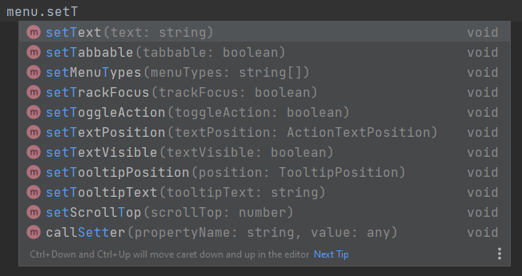

TypeScript Support
| This document is referring to a past Scout release. Please click here for the recent version. |
Eclipse Scout is written in TypeScript and therefore comes with a fully typed TypeScript API.
This gives you many benefits:
-
More efficient development
Typing allows your IDE to better assist with code completion during development and to only suggest methods and properties for an object that actually exists.Figure 1. Better Code Completion -
Easier entry
With better code completion and clear method signatures, a not-so-experienced JavaScript developer can more easily get up to speed and understand the relationships in the code. -
More confidence when updating
If a used API has changed, the code turns red and the build fails. -
More confidence during development
Incorrect use of an API or code in general is detected at an early stage. The developer gets more security that his code will work.
In addition to the TypeScript API, Scout also tries to make it as easy as possible for you so you can write TypeScript yourself in your project. This includes:
-
An enhanced build stack that can transpile TypeScript code to JavaScript.
-
An improved Scout SDK so IntelliJ can handle Scout code written in TypeScript.
-
Predefined TypeScript configuration and ESLint rules for TypeScript.
Project Setup for TypeScript
To use TypeScript in your Project, you need to create a tsconfig.json that extends from the Scout tsconfig.json.
Follow the instructions at @eclipse-scout/tsconfig to create one.
Now, just create a TypeScript file (a new file ending with .ts) and start writing TypeScript!
The build automatically processes these files, so you don’t have to adjust the build unless you are writing a JavaScript library. If that is the case, see technical-guide:user-interface/build-stack.adoc#authoring-libraries.
To enable code linting for TypeScript files just ensure your ESLint configuration is correctly setup as described in technical-guide:user-interface/build-stack.adoc#eslint. The Scout default configuration can handle JavaScript as well as TypeScript code, so there is no separate configuration needed.
Note: if you are using third party libraries, we suggest you check if they include types.
Some libraries contain the types directly in the package, for others the types are often available as a separate npm module from DefinitelyTyped which you need to add as devDependency to your package.json.
If there are no types available at all, you will have to provide at least some types for the library by yourself in order to work efficiently with it.
To get started with TypeScript or to learn more about it, we recommend visiting https://www.typescriptlang.org/.
TypeScript Migration
If you would like to migrate your existing code base to TypeScript, you can use the Scout Migration Tool for an initial automatic migration. But be aware, that the majority of the work, which is adding types, will need to be done manually.
Migrating to TypeScript is not required, you can still use JavaScript or write only new code with TypeScript. However, if you are a library developer, we recommend migrating to TypeScript to make the usage of the library easier.
Detailed instruction for the migration can be found here: @eclipse-scout/migrate